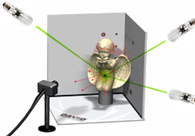
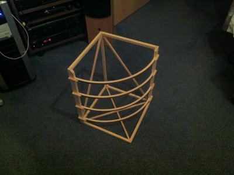

BRDF Estimation on Objects
BRDF Estimation on Objects

Implementation – Hardware

Figure 1: The Basic Idea
Meaningful measurements for BRDF estimation can be acquired by taking pictures of the scene,
having the camera at a static position, but moving a point light source to predefined spots.
This basic idea is demonstrated in Figure 1. We chose to go with multiple light sources turned
on one at a time rather than a moveable
light source for the sake of much easier implementation. For this we use a 4x4 matrix of super bright
white LEDs with a wide angle of radiation which are aligned concentrically around the centre of the
scene in different heights. This makes it easier later in the estimation process, because the
positions of the discrete light sources are known and can be hard-coded. The following images show
photos taken during the building process.
 Figure 2: Building the Skeleton 1
Figure 2: Building the Skeleton 1
 Figure 3: Building the Skeleton 2
Figure 3: Building the Skeleton 2

Figure 4: Finished Skeleton
{kind=link}
 Figure 5: Finished Skeleton backside
Figure 5: Finished Skeleton backside
 Figure 6: LED wiring
Figure 6: LED wiring
 Figure 7: Arduino Socket
Figure 7: Arduino Socket
 Figure 8: Wiring the LEDs
Figure 8: Wiring the LEDs
| cable color: | white | yellow | pink | grey | red | green/red | brown/white | green | |
| Columns: | Rows: | ||||||||
| LED #: | D0: | D1: | D2: | D3: | D4: | D5: | D6: | D7: | |
| NONE | HIGH | HIGH | HIGH | HIGH | HIGH | HIGH | HIGH | HIGH | (all low or all high!) |
| 1 | HIGH | low | low | low | low | HIGH | HIGH | HIGH | |
| 2 | low | HIGH | low | low | low | HIGH | HIGH | HIGH | |
| 3 | low | low | HIGH | low | low | HIGH | HIGH | HIGH | |
| 4 | low | low | low | HIGH | low | HIGH | HIGH | HIGH | |
| 5 | HIGH | low | low | low | HIGH | low | HIGH | HIGH | |
| 6 | low | HIGH | low | low | HIGH | low | HIGH | HIGH | |
| 7 | low | low | HIGH | low | HIGH | low | HIGH | HIGH | |
| 8 | low | low | low | HIGH | HIGH | low | HIGH | HIGH | |
| 9 | HIGH | low | low | low | HIGH | HIGH | low | HIGH | |
| 10 | low | HIGH | low | low | HIGH | HIGH | low | HIGH | |
| 11 | low | low | HIGH | low | HIGH | HIGH | low | HIGH | |
| 12 | low | low | low | HIGH | HIGH | HIGH | low | HIGH | |
| 13 | HIGH | low | low | low | HIGH | HIGH | HIGH | low | |
| 14 | low | HIGH | low | low | HIGH | HIGH | HIGH | low | |
| 15 | low | low | HIGH | low | HIGH | HIGH | HIGH | low | |
| 16 | low | low | low | HIGH | HIGH | HIGH | HIGH | low | |
For demonstration purpose the microcontroller software is set to continously changing LED ports in the following video.
Demo Video
With having build the frame, wired the LEDs and coded software for the microcontroller, the hardware part is complete. Figure 9 and 10 show the frame integrated with the DAVID laserscanner.
 Figure 9: BRDF Scanner
Figure 9: BRDF Scanner
 Figure 10: BRDF Scanner, different view
Figure 10: BRDF Scanner, different view
For the implementation of the software, please continue reading here.